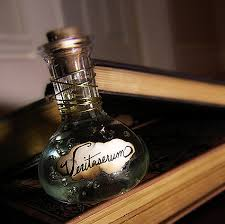

A Journey Through Learn More About Potions
PART 1: Polyjuice Potion |
|
|---|---|
 |
Characteristics: This complex potion allows the drinker to take on the physical appearance of someone else for a limited time. |
| Color: Murky green. | |
| Flavor:Tastes like overcooked cabbage. | |
| Instructions:The potion requires a month to brew and includes ingredients like lacewing flies, leeches, powdered bicorn horn, and a piece of the person one wishes to become (like hair or nail clippings). | |
| Interesting Fact: The potion is notoriously difficult to brew and has many side effects if not done correctly. In "Chamber of Secrets," Harry, Ron, and Hermione use it to transform into Slytherin students, leading to humorous and dangerous situations. | |
PART 2: Felix Felicis Potion (Liquid Luck) |
|
|---|---|
 |
Characteristics: Grants the drinker extraordinary luck for a limited time, making everything they attempt succeed. |
| Color: Golden. | |
| Flavor:Sweet and syrupy. | |
| Instructions:This potion is challenging to brew and should be consumed in small quantities to avoid overconfidence and recklessness. | |
| Interesting Fact: In "Harry Potter and the Half-Blood Prince," Professor Slughorn gives Harry a vial of Felix Felicis, which he uses to successfully navigate a series of challenges. However, it’s advised not to rely on it too often, as luck can be unpredictable. | |
PART 3: Draught of Living Death Potion |
|
|---|---|
 |
Characteristics: A powerful sleeping potion that induces a deathlike slumber. |
| Color: Dark purple. | |
| Flavor:Unpleasant; described as tasting like a mix of dirt and bitter herbs. | |
| Instructions:Requires ingredients such as valerian root, powdered snake fangs, and a few drops of Essence of Dittany. | |
| Interesting Fact: In "Harry Potter and the Half-Blood Prince," Professor Snape demonstrates this potion during class. It’s so potent that it can mimic death, leading to dramatic situations when characters mistakenly believe someone has died. | |
PART 4: Shrinking Solution Potion |
|
|---|---|
 |
Characteristics: Causes the drinker or object to shrink in size temporarily. |
| Color: Light blue with bubbles. | |
| Flavor:Sour with a hint of mint. | |
| Instructions:Requires ingredients like Shrivelfigs and Dittany; it must be brewed carefully to avoid unintended effects. | |
| Interesting Fact: In "Harry Potter and the Prisoner of Azkaban," Neville Longbottom struggles with this potion in class, leading to humorous consequences when his cauldron explodes. It showcases the challenges young witches and wizards face while learning magic. | |
PART 5: Veritaserum Potion |
|
|---|---|
|  | Characteristics: A powerful truth serum that forces the drinker to reveal the truth. |
| Color: Clear and colorless. | |
| Flavor:Bitter. | |
| Instructions:Requires ingredients like powdered root of asphodel and essence of belladonna. It must be administered carefully, as it can be dangerous in the wrong hands. | |
| Interesting Fact: In "Harry Potter and the Goblet of Fire," it’s used to interrogate Barty Crouch Jr. However, it’s not foolproof; skilled wizards can resist its effects, making it a controversial tool for obtaining information. | |